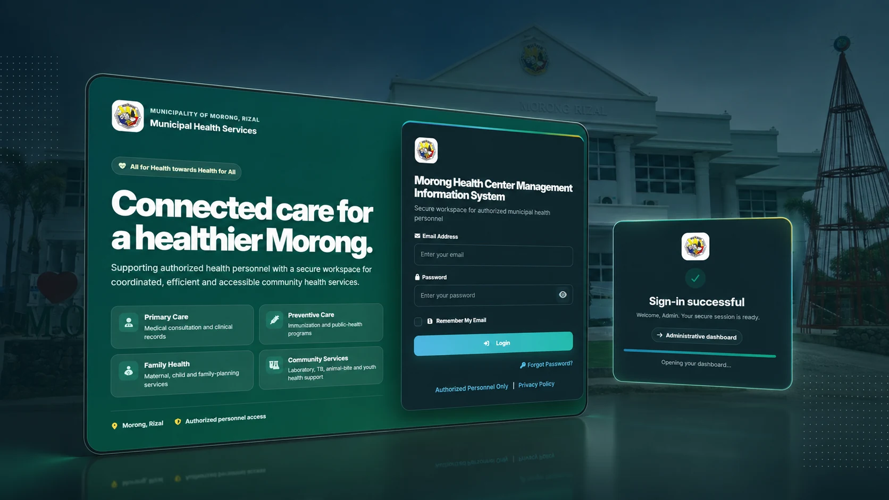

Paper & Spreadsheet-Heavy Records
Important information is difficult to update, search, reconcile, or share across separate files and forms.
Direction → centralized structured recordsHASSOU designs and develops web applications, custom systems, database-backed workflows, and system improvements around the way your organization actually works.
Start with the problem—not the technology. We help clarify users, requirements, features, workflow, data, interface needs, development scope, testing, deployment, and post-launch support.
// Understand → Plan → Build → Test.

A useful software project usually starts with an operational problem—not a technology list. We help organize repetitive, difficult-to-track, or fragmented work into clearer digital workflows.
Important information is difficult to update, search, reconcile, or share across separate files and forms.
Direction → centralized structured recordsTeams move between messages, folders, documents, and disconnected tools just to understand current work.
Direction → one coordinated workflowStatus, history, totals, and results take too long to collect because data is not structured for visibility.
Direction → useful dashboards & reportsStaff repeat encoding, checking, routing, and follow-up tasks that can be made more consistent.
Direction → guided repeatable processesDifferent users need different responsibilities, records, and actions but the current process does not separate access clearly.
Direction → role-aware system behaviorA current system works, but bugs, missing features, confusing interfaces, or outdated workflows get in the way.
Direction → focused enhancement & QARecognize one of these problems? You do not need a complete technical specification. Start with what happens today and what should work better.
Build a Free Project BriefThe service is chosen around the problem, users, operating environment, current system, and required outcome. We do not force every project into the same platform or package.
Responsive websites, web applications, portals, dashboards, and application-oriented solutions built around defined user workflows.
Management systems and structured data workflows for records, monitoring, transactions, assessments, inventory, reporting, and operations.
Task-focused interface design and redesign centered on usability, responsive behavior, information hierarchy, and clearer user actions.
Review, testing, troubleshooting, bug fixing, regression checks, and targeted improvements for systems that need more reliability.
Continue, modernize, or improve an existing system through feature additions, workflow changes, UI updates, database improvements, or code refinement.
Project-specific technical assistance for system behavior, deployment issues, configuration, handover, and implementation questions.
Each project identifies its status, context, and development attribution so clients can see what the HASSOU team has actually worked on—without presenting every project as the same kind of engagement.
Independent development, academic/team projects, and professional collaboration remain labeled separately. Live links are shown only where a public deployment is available.
Healthcare management system experience covering patient intake, appointments, records, interface architecture, database-connected workflows, back-end integration, and usability.
Independent full-stack career guidance platform with assessment logic, database-backed recommendations, responsive interface work, hosting, and live deployment.
Live full-stack management information system developed by Cathyrine Menguito for role-based business operations and structured database-backed records.
Application-based credentials system developed by Ariel B. Eubanas, Jr., demonstrating core-team experience beyond publicly hosted browser systems.
Real-estate management information system in professional development context, with team experience in UI/UX, responsive implementation, structured data, and workflow delivery.
*Usage and outcome figures are project-reported where indicated. Directly attributed projects identify the responsible developer; professional work remains credited to the organization where it occurred. Some application-based systems do not have a public web deployment.
A clear process keeps requirements, interface decisions, development, testing, handover, and support connected to the agreed scope.
Users, workflow, current pain points, data, constraints, and desired outcome.
Modules, platform direction, features, responsibilities, milestones, and assumptions.
Information architecture, interface direction, interaction states, and feedback loops.
Implementation, validation, database workflows, reviews, testing, and iteration.
Release planning, documentation, handover, training, maintenance, and enhancement options.
Good systems do not start with code. They start by understanding the problem, users, data, workflow, constraints, and expected result.
Build Your Starting BriefThe core team combines full-stack system development, UI/UX, database workflows, testing, documentation, deployment support, and project coordination across independent, academic, and professional development contexts.
System development, interface design, workflow implementation, documentation & project coordination
Provides system development experience across PHP, MySQL, HTML, CSS, JavaScript, UI/UX, documentation, and project coordination, supporting responsive interfaces, database-driven workflows, system implementation, troubleshooting, testing, deployment, and collaborative development.
Direct development evidence: MBMIS · Angono NHS Career Assessment
Shared project experience: RHU Morong · RITREMIS
Full-stack system development, back-end logic, database workflows & implementation support
Provides complementary full-stack development expertise across PHP, MySQL, HTML, CSS, Bootstrap, and JavaScript, supporting application logic, database-driven functionality, interface implementation, troubleshooting, testing, and system integration.
Direct development evidence: RSST SHS Credentials
Shared project experience: RHU Morong · RITREMIS · Angono NHS Career Assessment
Working together across web-based and application-based system development.
Both core developers worked on the fourth-year thesis system and received Outstanding System Design recognition for the developed project. This is presented as shared academic project experience—not as a HASSOU commercial client award.
View RHU case studySupport is scoped around the student team's actual requirements. The goal is to guide, review, develop, test, improve, and help students understand the technical project—not to replace the student's academic responsibility.
Technical development assistance based on approved project requirements, workflows, users, and system scope.
Continue or improve incomplete systems, add approved features, refine workflows, and modernize interfaces or data handling.
Review expected behavior, identify defects, test important flows, and help resolve system issues before presentation or deployment.
Review, continuation guidance, technical-writing support, formatting, diagrams, and documentation alignment based on project and school requirements.
Clarify architecture, workflow, database structure, features, technical decisions, and the reasoning students need to explain.
System walkthrough, likely technical questions, demo-flow preparation, and presentation readiness for supported projects.
Available for supported Capstone and Thesis projects before the scheduled defense, subject to the agreed project scope and schedule.
Academic integrity: HASSOU supports, guides, reviews, develops within an agreed technical scope, and helps students understand and improve their work. Students remain responsible for complying with school rules, authorship requirements, and defense expectations.
No complete technical specification is required. Answer a few discovery questions to organize the problem, users, features, environment, and delivery needs before sending an inquiry.
Every project is scoped individually. These answers cover the questions most relevant to starting, improving, or supporting a system project.
Core services include web and application development, custom systems and database solutions, UI/UX improvement, software maintenance, QA/debugging, existing-system enhancement, system support/troubleshooting, and scoped Capstone/Thesis technical support.
Yes. The free initial assessment covers preliminary discussion, direction, and likely scope so we can understand the problem and possible next steps. Development, implementation, formal deliverables, and other paid services are quoted separately after requirements are reviewed.
Yes. Depending on the project, enhancement work can include bug fixing, unfinished features, database issues, UI/UX changes, workflow refinement, testing, QA, documentation, and modernization. We review the current system before confirming scope.
Yes. Support can include system development and implementation guidance, existing-system enhancement, QA/debugging, documentation and manuscript support, technical consultation, and pre-defense demo preparation. Students remain responsible for academic requirements, authorship, and understanding the work they present.
Timeline depends on workflows, user roles, interface complexity, database requirements, integrations, testing, revisions, deployment, and the readiness of requirements. We provide a realistic schedule after discovery instead of promising an arbitrary turnaround.
Source-code ownership, repositories, database files, credentials, documentation, training, deployment assistance, maintenance, and future enhancements are defined in the project agreement. Handover expectations should be clear before implementation begins.
Send the problem, current workflow, project status, or system idea. We will use the first discussion to understand the likely direction and next steps before any paid development is confirmed.
We review your problem, users, workflow, current system or project status, and desired outcome. If the project is a fit, we clarify the likely direction and the information needed before preparing a proposal or quotation.
Send the briefTell us the current workflow, users, pain points, and desired outcome.
Requirements reviewWe examine scope, platform fit, dependencies, and questions that need clarification.
Project discussionWe align on priorities, timeline, deliverables, technical approach, and commercial terms.
Your project inquiry has been accepted by our contact service. HASSOU TechGroup Solutions will review the details and reply using the contact information you provided.